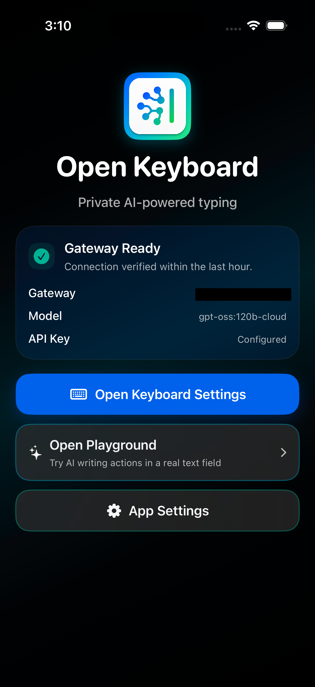
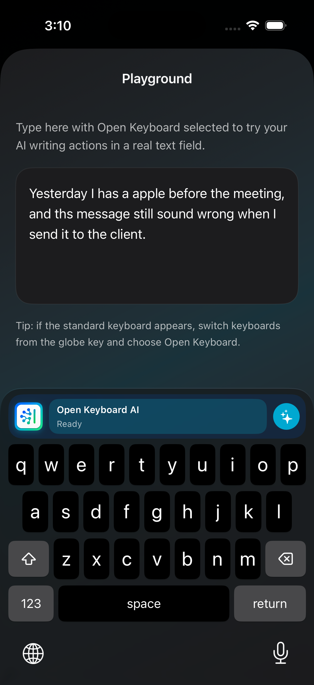
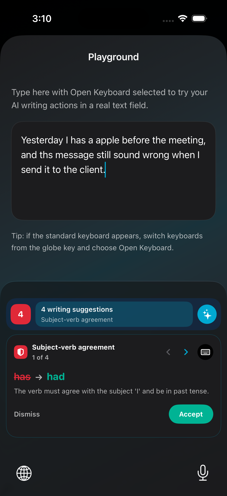
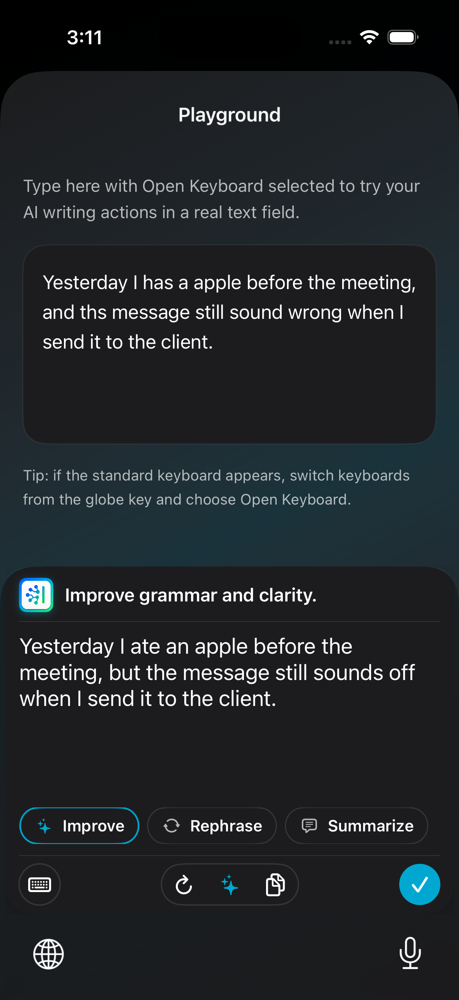

Open Keyboard
A privacy-aware iPhone keyboard that brings grammar review and AI writing help into any text field, while keeping the user in control of when text is sent for assistance.
Product idea: make writing assistance available from the keyboard itself, instead of asking users to copy text into a separate AI app.
Current progress: the prototype now has a working iOS host app, custom keyboard extension, gateway setup, grammar review, and AI writing actions with review-before-replace controls.
My role: product direction, iOS app and keyboard extension development, AI workflow integration, quality checks, and public project documentation.
Manager Summary
Writing Help Is Usually Outside The Workflow
Users often need grammar fixes or clearer wording while they are already typing in another app. Switching to a separate AI tool slows the flow and creates privacy questions.
AI Assistance Inside The Keyboard
Open Keyboard keeps the writing surface close to the user. Grammar review and writing actions are available from the custom keyboard, with explicit review before any replacement.
Control Without Hiding The Complexity
The app separates normal typing from AI actions. Text is sent only when the user requests help, and the configured gateway controls model access.
Complete Working Prototype
The main experience is now functional enough to demonstrate the product direction, validate the keyboard workflow, and continue polishing real-device behavior.
What Works Now
Gateway-Ready App State
The host app can store gateway settings, test the connection, discover available models, and show whether the keyboard is ready to use AI actions.
Grammar Review
The keyboard can request grammar correction for the current text, show issues, and let the user accept or dismiss a suggested replacement.
AI Writing Actions
Improve, Rephrase, and Summarize style actions are presented separately from grammar review, with generated text shown before replacement.
Reliability Improvements
Recent fixes improved manual grammar loading and safer text replacement, including word-boundary handling for small corrections.
Product Screens




Current Focus
Keyboard Experience
- Improve selected-text and longer-paragraph handling.
- Refine empty, loading, offline, and quota states.
- Continue real-device validation across normal typing and AI actions.
Public Readiness
- Prepare setup guidance for users who want to run their own gateway.
- Validate prompt quality and latency across local and hosted model options.
- Prepare TestFlight, privacy notes, and release documentation when the experience is polished enough.
Technology Stack
iOS App
AI Core
Repository Entry Points
Open Keyboard is the user-facing iOS project. The gateway page explains the backend control layer that powers AI requests.
Open the repository for implementation details, or view the gateway page to see the backend control layer behind the keyboard.